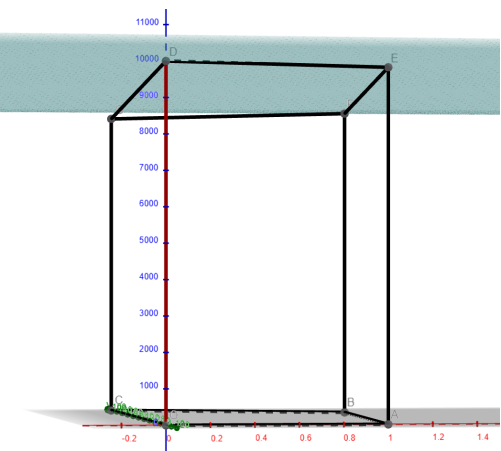
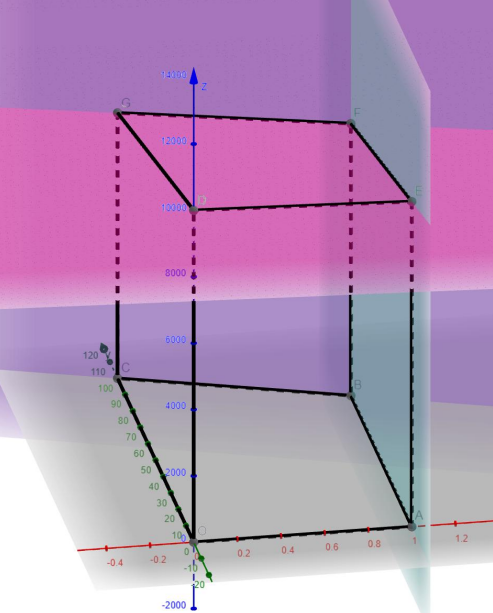

Méthodes d'Optimisation — Algorithme du Simplexe
Application de la programmation linéaire et du simplexe à deux problèmes d'optimisation : résolution standard (8 pivots, Z optimal = 10 000) et analyse du cyclage selon la règle de pivot.
Contexte et ressources mobilisées
R4.04, Sujet 2 — résoudre deux problèmes de programmation linéaire par la méthode du simplexe en forme tabulaire, puis analyser le comportement face à la dégénérescence. Cours mobilisés : variables d'écart, critère d'entrée de variable, calcul du rapport de pivot, règles de Bland et Dantzig.
Activités et implication
- Exercice 1 : 3 variables, 3 contraintes — 8 itérations de pivot jusqu'à Z = 10 000 optimal à (x₁=1, x₂=100, x₃=10 000)
- Exercice 2 : démonstration du cyclage avec règle D₁ (boucle infinie) vs. règle D₁' (terminaison garantie en nombre fini d'étapes)
- Interprétation géométrique 3D : identification des sommets du polytope correspondant aux solutions de base
Apprentissages clés
- Le choix de la règle de pivot est déterminant : une mauvaise règle peut rendre l'algorithme non-convergent
- Lecture du tableau final : variables hors-base nulles, contraintes actives, valeur de Z — solution lisible directement
- Lien entre algèbre (tableau du simplexe) et géométrie (déplacement sur les sommets d'un polytope convexe)
Traces sélectionnées

Polytope de la région admissible (Ex. 1)Représentation 3D du polytope convexe avec les sommets A–E identifiés — visualisation géométrique de l'espace des solutions admissibles.

Polytope de la région admissible (Ex. 2)Représentation 3D de la région admissible du second problème — les faces colorées correspondent aux contraintes actives.